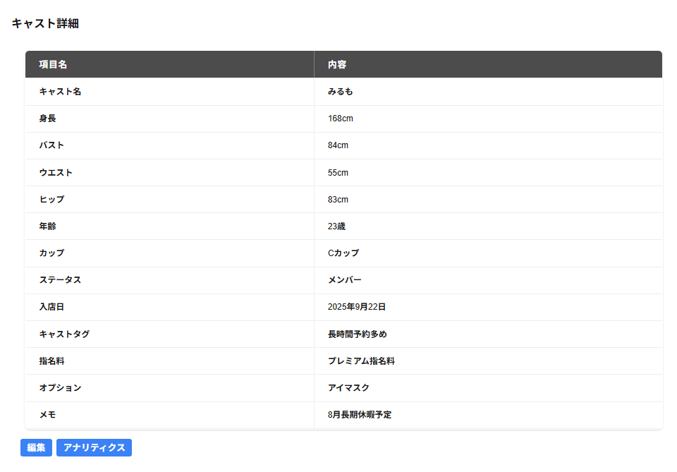

キャスト詳細の一覧には以下の項目が一覧で表示されます。
キャスト詳細の下にキャスト実績が表示されています。
・キャスト
キャスト名が表示されます。
・身長
キャストの身長が表示されます。
・バスト
キャストのバストが表示されます。
・ウエスト
キャストのウエストが表示されます。
・ヒップ
キャストのヒップが表示されます。
・年齢
キャストの年齢が表示されます。
・カップ
キャストのカップが表示されます。
・ステータス
キャストのステータスが表示されます。
・入店日
キャストの入店日が表示されます。
・退店日
キャストの退店日が表示されます。
※ステータスが退職のキャストのみ表示されます。
・キャストタグ
登録したキャストのタグが表示されます。
・指名料
登録したキャストの指名料が表示されます。
・オプション
登録したキャストのオプションが表示されます。
・メモ
キャストのメモが表示されます。
・編集
キャストの詳細の編集画面が表示されます。
・アナリティクス
キャストアナリティクスが表示されます。
